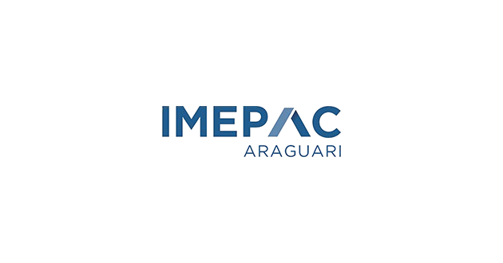

Docência: uma construção ético-profissional
Discute os desafios para o desenvolvimento de um projeto ético-profissional.
Ler artigo →
ÉTICA E MORAL
A ética profissional forma o conjunto de valores que orientam a conduta dentro de determinado ambiente profissional. Ela está presente nas escolhas e atitudes do dia a dia, influenciando a forma como cada pessoa age, se relaciona com os outros e exerce suas responsabilidades.
Ter uma postura ética envolve agir com respeito, responsabilidade, honestidade e consciência sobre as consequências das próprias ações. No ambiente profissional, esses valores são importantes para manter relações de confiança e contribuir para um ambiente mais respeitoso e responsável.
Referências:
BRASIL. Comissão de Valores Mobiliários. *Condutas éticas e profissionais*. Brasília, DF, 2020.
BRASIL. Ministério da Justiça e Segurança Pública. *Ética profissional*. Brasília, DF.
Ética
A palavra ética vem do grego ethos e está relacionada ao caráter e à forma como as pessoas agem. Ela está presente nas nossas relações, nas escolhas que fazemos e nas decisões do dia a dia. Ética e moral estão relacionadas ao comportamento humano e aos valores que usamos para decidir como agir em diferentes situações. Apesar de serem conceitos diferentes, os dois estão ligados e fazem parte da convivência em sociedade.
A ética também está presente no ambiente profissional, ajudando a definir princípios e comportamentos que devem ser seguidos. É a partir dela que podem ser criados os códigos de ética, que orientam a conduta dos profissionais em suas atividades.
Honestidade: Devolver um objeto ou dinheiro encontrado ao dono
Profissional: Respeitar o sigilo de informações confidenciais, recusar subornos
Cidadania: Cumprir leis e normas de convivência
Referências:
NATIONAL GEOGRAPHIC BRASIL. *O que é a ética e por que ela é importante*
FIA. *Ética e moral: entenda o que são e principais exemplos*
CONCEITO
A palavra moral vem do latim Mos , que significa costume ou maneira de agir. Ela está relacionada aos valores, regras e costumes que aprendemos ao longo da vida e que formam nosso comportamento. A moral está presente nas escolhas que fazemos e no convívio social. Ela nos ajuda a entender o que uma sociedade ou grupo determinado considera certo ou errado, bom ou ruim, de acordo com seus valores e costumes. O conceito pode mudar conforme a cultura, a época e o lugar em que as pessoas vivem.
Honestidade: Não pegar algo que pertence a outra pessoa.
Respeito: Tratar as pessoas com educação, mesmo quando existem diferenças de opinião.
Responsabilidade: Cumprir com seus deveres e assumir as consequências de suas atitudes.
Solidariedade: Ajudar alguém que esteja precisando.
Referências:
MENEZES, Pedro. Definição de moral. Toda Matéria. Disponível em: Toda Matéria.
FIA. *Ética e moral: entenda o que são e principais exemplos*
LEITURA COMPLEMENTAR
Confira abaixo alguns artigos científicos relacionados ao tema. Para acessar o conteúdo completo, clique em "Ler artigo".
Discute os desafios para o desenvolvimento de um projeto ético-profissional.
Ler artigo →Importante discussão acerca da ética profissional.
Ler artigo →Fundamentos sociais da ética.
Ler artigo →QUEM SOMOS
O programa foi desenvolvido a partir da disciplina de Projeto Integrador, sob orientação da Profa. Dra. Karla Cristina Walter
O objetivo do projeto é levar informações sobre ética e moral para a comunidade, de uma forma simples e fácil de entender. A ideia surgiu da importância desses temas tanto na vida profissional quanto no nosso dia a dia.
Por meio do site, buscamos compartilhar informações, exemplos e situações que ajudem a entender melhor a ética e a moral e a refletir sobre nossas escolhas e atitudes.
Agora é hora de colocar seus conhecimentos em prática! Leia cada situação com atenção e escolha a alternativa que você considera mais adequada.
No final, você verá seu resultado e poderá refletir sobre suas escolhas.